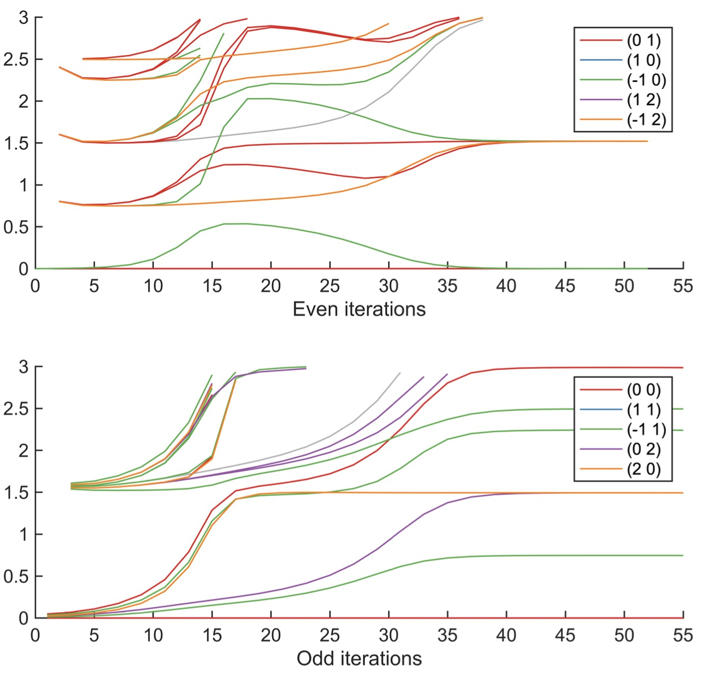
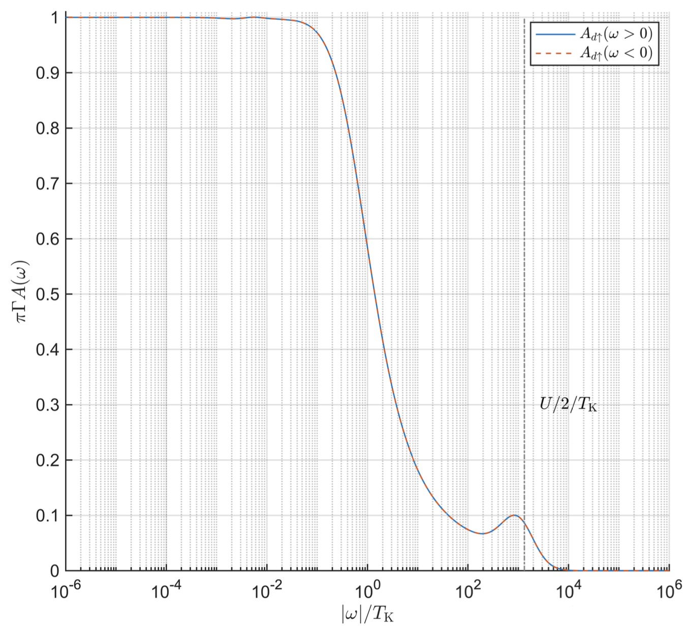
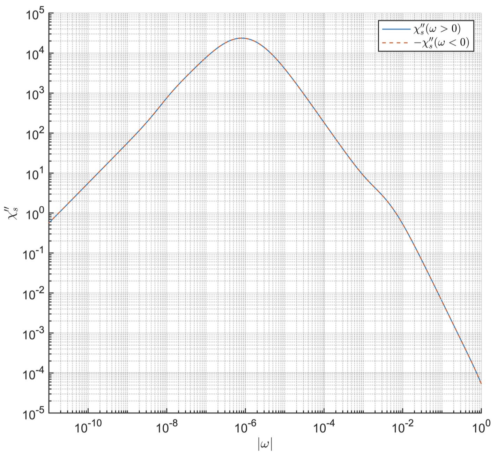

NRG-3: Impurity Spectral Function
Author: Seung-Sup Lee
Date: 20.06.2020 (Minor update: 30.06.2020)
Here we will compute the thermal expectation value of impurity operators and the impurity spectral function, by using the full-density-matrix NRG (fdmNRG).
Consider an operator, say \({\hat{O} }_d\) , that acts on the impurity. Then the spectral function of the retarded-time correlation function of \({\hat{O} }_d\) is given by:
where the superscript \(\pm\) of the commutator means the anti-commutator \([\,\,,\,\,]_+\) for fermionic \({\hat{O} }_d\) and the commutator \([\,\,,\,\,]_-\) for bosonic \({\hat{O} }_d\) . With the energy eigenstates \(\lbrace |\alpha \rangle {\rbrace}\) and their corresponding eigenvalues \(\lbrace E_{\alpha } \rbrace\) , we write the Lehmann representation of the spectral function as
where \(\hat{\rho}\) is the density matrix of the system at thermal equilbrium,
and \(Z=\sum_{\alpha } \exp (-E_{\alpha } /T)\) is the partition function. In this tutorial, we will use \(\beta\) as an index, not as the inverse temperature.
As explained in the lecture, the discarded eigenstates in the iterative diagonalization consitute the complete basis of (approximate) energy eigenstates \(\lbrace |\alpha ,e\rangle_{\ell }^D \rbrace\) . However, it is hard to compute the spectral weight associated with \(|\alpha ,e\rangle_{\ell }^D\) and \(|\beta ,e^{\prime } \rangle_{\ell^{\prime } }^D\) that are at different iterations. Thus we employ the NRG approximation to compute spectral functions:
Here \(\ell\) is the iteration index, and \(X\) and \(Y\) are either \(K\) (kept) or \(D\) (discarded). The case \(X=Y=K\) is not considered to avoid double-counting.
The density matrix in the discarded space is given by the diagonal matrix,
where \(d\) is the dimension of the local Hilbert space of each chain site, and \(N\) is the index of the last chain site. In the construction of the complete basis \(\lbrace |\alpha ,e\rangle_{\ell }^D \rbrace =\lbrace |\alpha \rangle_{\ell }^D \otimes |\sigma_{\ell +1} \rangle \otimes |\sigma_{\ell +2} \rangle \otimes \cdots \otimes |\sigma_N \rangle \rbrace\) , the "environmental states" \(|e \rangle =|\sigma_{\ell +1} \rangle \otimes |\sigma_{\ell +2} \rangle \otimes \cdots \otimes |\sigma_N \rangle\) does not contribute to the energy; they only introduce the degeneracy. So \(d^{N-\ell }\) counts the degeneracy introduced by the environmental states.
On the other hand, the density matrix in the kept space is given by tracing out the Hilbert spaces of later chain sites,
And there are no off-diagonal blocks, i.e., \(\rho_{[\ell ]\,\,X}^{~~\,Y} =0\) if \(X\not= Y\) . The name of the method, "full density matrix", is given by the fact that the density matrices from the all iterations (i.e., all energy scales) are considered.
The Lehmann representation above represents the discrete spectral data of the spectral function; the result is the collection of the Dirac delta functions, rather than continuous curves. This discreteness originates from the logarithimic discretization of the originally continuous system. To return to the original continuity, we need to broaden the discrete data to obtain the continuous curves. For this, we use the broadening kernel that is the convolution of the symmetric logarithmic Gaussian (for broadening for high frequencies) and the derivative of the Fermi-Dirac distribution function (for broadening for low frequencies), as developed in [S.-S. B. Lee and A. Weichselbaum, Phys. Rev. B 94, 235127 (2016) or its arXiv version].
Please review the following newly added functions:
- getRhoFDMQS.m: It is zipped together with this document. This function is designed to construct the density matrices \(\rho_{[\ell ]\,\,D}^{~~\,D}\) and \(\rho_{[\ell ]\,\,K}^{~~\,K}\) . This function should be completed, as Exercise 1. See below for details.
- getAdiscQS.m: It is zipped together with this document. This function computes the Lehmann representation of the spectral function. Its second input corresponds to \({\hat{O} }_d\) above. The first output odisc is the frequency grid, and the second output Adisc is the histogram of the spectral weights \(A_{\alpha \beta }^{\ell XY}\) according to the frequency grid. That is, the value of Adisc(n) is the sum of all the spectral weights \(A_{\alpha \beta }^{\ell XY}\) whose corresponding frequency values \(E_{\beta }^{\ell Y} -E_{\alpha }^{\ell X}\) are close to the frequency bin value odisc(n). This function should be completed, as Exercise 2. See below for details.
- NRG/getAcont.m: Broaden the discrete data to obtain continuous curves. In this tutorial, we will not discuss the detail of the function. So take this function as granted. Interested readers may refer to [S.-S. B. Lee and A. Weichselbaum, Phys. Rev. B 94, 235127 (2016) or its arXiv version] for details. (Yes, it's a shameless self-advertisement...)
Iterative diagonalization
First, run the iterative diagonalization for the SIAM. Here we use the same parameters as those used in the last tutorial.
clear
% Hamiltonian parameters
U = 4e-3; % Coulomb interaction at the impurity
epsd = -U/2; % impurity on-site energy
Gamma = 8e-5*pi; % hybridization strength
% NRG parameters
Lambda = 2.5; % discretization parameter
N = 55; % length of the Wilson chain
Nkeep = 300;
% Wilson chain
[ff,gg] = doCLD([-1 1],[1 1]*Gamma/pi,Lambda,N);
Note that we don't need to post-process the Wilson chain parameters as we did for the tutorial T11a, since the calculations in this tutorial are stable against the (very) small numerical noise that mattered in T11a.
% symmetries
symstr = 'Acharge,SU2spin'; % U(1) charge and SU(2) spin
% symstr = 'Acharge,Aspin'; % U(1) charge and U(1) spin
% Construct local operators
[F,Z,S,I] = getLocalSpace('FermionS',symstr,'NC',1);
[F,Z,S,EF] = setItag('s00','op',F,Z,S,I.E);
% particle number operator
NF = QSpace;
for itF = 1:numel(F)
NF(itF) = contract(F(itF),'!2*',F(itF));
end
% Impurity Hamiltonian
H0 = U/2*sum(NF)*(sum(NF)-1) + epsd*sum(NF) + 1e-33*EF;
% ket tensor for the impurity
A0 = getIdentity(setItag('L00',getvac(EF,1)),1,EF,1,'K00',[1,3,2]);
H0 = contract(A0,'!2*',{A0,H0});
% same hopping amplitude and on-site energies for all flavors
ff = repmat(ff,[1,numel(F)]);
gg = repmat(gg,[1,numel(F)]);
% iterative diagonalization
Inrg = NRG_IterDiagQS(H0,A0,Lambda,ff,F,gg,NF,Z,Nkeep);
21-05-11 17:03:32 | NRG: start
21-05-11 17:03:32 | #00/55 : NK=3/3, EK=1e-33/1e-33
21-05-11 17:03:32 | #01/55 : NK=10/10, EK=0.04894/0.04894
21-05-11 17:03:32 | #02/55 : NK=35/35, EK=3.209/3.209
21-05-11 17:03:32 | #03/55 : NK=126/126, EK=6.225/6.225
21-05-11 17:03:32 | #04/55 : NK=310/462, EK=7.499/13.02
21-05-11 17:03:32 | #05/55 : NK=310/1154, EK=7.033/13.08
21-05-11 17:03:32 | #06/55 : NK=318/1150, EK=7.243/13.62
21-05-11 17:03:32 | #07/55 : NK=310/1178, EK=7.047/13.09
21-05-11 17:03:33 | #08/55 : NK=318/1150, EK=7.248/13.61
21-05-11 17:03:33 | #09/55 : NK=310/1178, EK=7.073/13.13
21-05-11 17:03:33 | #10/55 : NK=318/1150, EK=7.274/13.59
21-05-11 17:03:33 | #11/55 : NK=310/1178, EK=7.117/13.19
21-05-11 17:03:33 | #12/55 : NK=318/1150, EK=7.359/13.59
21-05-11 17:03:33 | #13/55 : NK=310/1178, EK=7.207/13.33
21-05-11 17:03:33 | #14/55 : NK=322/1150, EK=7.688/13.9
21-05-11 17:03:34 | #15/55 : NK=312/1192, EK=7.46/13.82
21-05-11 17:03:34 | #16/55 : NK=327/1166, EK=8.385/14.7
21-05-11 17:03:34 | #17/55 : NK=304/1218, EK=8.45/14.98
21-05-11 17:03:34 | #18/55 : NK=307/1136, EK=9.027/16.05
21-05-11 17:03:34 | #19/55 : NK=312/1148, EK=9.33/16.02
21-05-11 17:03:34 | #20/55 : NK=311/1170, EK=9.719/17.5
21-05-11 17:03:34 | #21/55 : NK=327/1174, EK=9.804/17.18
21-05-11 17:03:34 | #22/55 : NK=311/1231, EK=9.781/18.26
21-05-11 17:03:35 | #23/55 : NK=302/1174, EK=9.751/17.32
21-05-11 17:03:35 | #24/55 : NK=311/1134, EK=9.836/17.88
21-05-11 17:03:35 | #25/55 : NK=322/1174, EK=9.979/17.46
21-05-11 17:03:35 | #26/55 : NK=311/1210, EK=9.916/18.36
21-05-11 17:03:35 | #27/55 : NK=322/1174, EK=10.13/17.64
21-05-11 17:03:35 | #28/55 : NK=325/1210, EK=10.18/18.32
21-05-11 17:03:35 | #29/55 : NK=322/1224, EK=10.34/18.23
21-05-11 17:03:36 | #30/55 : NK=315/1210, EK=10.19/18.35
21-05-11 17:03:36 | #31/55 : NK=322/1184, EK=10.65/18.36
21-05-11 17:03:36 | #32/55 : NK=303/1210, EK=10.33/18.76
21-05-11 17:03:36 | #33/55 : NK=300/1136, EK=10.79/18.81
21-05-11 17:03:36 | #34/55 : NK=318/1122, EK=10.94/18.84
21-05-11 17:03:36 | #35/55 : NK=300/1190, EK=11.33/19.89
21-05-11 17:03:36 | #36/55 : NK=301/1119, EK=11.16/19.39
21-05-11 17:03:36 | #37/55 : NK=316/1118, EK=11.94/20.4
21-05-11 17:03:37 | #38/55 : NK=306/1175, EK=11.61/20.4
21-05-11 17:03:37 | #39/55 : NK=310/1136, EK=12.08/21.49
21-05-11 17:03:37 | #40/55 : NK=306/1151, EK=11.76/20.7
21-05-11 17:03:37 | #41/55 : NK=307/1136, EK=11.97/21.78
21-05-11 17:03:37 | #42/55 : NK=306/1139, EK=11.82/20.14
21-05-11 17:03:37 | #43/55 : NK=309/1136, EK=12.2/21.9
21-05-11 17:03:37 | #44/55 : NK=306/1147, EK=11.85/20.88
21-05-11 17:03:38 | #45/55 : NK=309/1136, EK=12.21/21.95
21-05-11 17:03:38 | #46/55 : NK=306/1147, EK=11.86/20.9
21-05-11 17:03:38 | #47/55 : NK=309/1136, EK=12.22/21.97
21-05-11 17:03:38 | #48/55 : NK=306/1147, EK=11.86/20.91
21-05-11 17:03:38 | #49/55 : NK=309/1136, EK=12.22/21.98
21-05-11 17:03:38 | #50/55 : NK=306/1147, EK=11.86/20.91
21-05-11 17:03:38 | #51/55 : NK=309/1136, EK=12.22/21.98
21-05-11 17:03:38 | #52/55 : NK=306/1147, EK=11.86/20.91
21-05-11 17:03:39 | #53/55 : NK=309/1136, EK=12.22/21.98
21-05-11 17:03:39 | #54/55 : NK=306/1147, EK=11.86/20.91
21-05-11 17:03:39 | #55/55 : NK=0/1136, EK=0/21.98
21-05-11 17:03:39 | Memory usage : 1.98GiB
Elapsed time: 7.017s, CPU time: 14.64s, Avg # of cores: 2.086
Plot the energy flow diagram.
% Energy flow diagram
Eshow = 3; % energy window to show (from 0 to Eshow)
% determine energy levels, corresponding quantum numbers and degeneracies
Es = cell(numel(Inrg.HK),1); % energies
Qs = cell(numel(Inrg.HK),1); % corresponding quantum numbers
for itN = 1:numel(Es)
if itN < N
HN = Inrg.HK{itN}; % kept Hamiltonian at itN
else
HN = Inrg.HD{itN}; % only discarded states at the last iteration
end
if itN == 1 % impurity is not diagonalized in NRG_IterDiagQS
[~,I] = eigQS(HN);
HN = QSpace(I.EK);
end
for itq = 1:size(HN.Q{1},1)
Qs{itN}(itq,:) = HN.Q{1}(itq,:);
Es{itN}{itq,1} = sort((HN.data{itq}(HN.data{itq} <= Eshow))','ascend');
end
end
% get maximum number of energy levels per symmetry sector
nEmax = 0;
for iti = 1:numel(Es)
nEmax = max([nEmax;cellfun('prodofsize',Es{iti}(:))]);
end
Quniq = unique(cell2mat(Qs),'rows'); % unique sets of quantum numbers
Es2 = cell(size(Quniq,1),1); % each Es2{n} is the collection of curves for each quantum number set Quniq(n,:)
Eeven = cell(size(Quniq,1),1); % even iterations
Eodd = cell(size(Quniq,1),1); % even iterations
for itq = (1:size(Quniq,1))
Es2{itq} = nan(numel(Es)+1,nEmax);
for iti = 1:numel(Es)
okq = ismember(Qs{iti},Quniq(itq,:),'rows');
if any(okq)
Etmp = Es{iti}{okq};
Es2{itq}(iti,(1:numel(Etmp))) = Etmp(:).';
end
end
Es2{itq}(:,(find(~all(isnan(Es2{itq}),1),1,'last')+1:end)) = [];
Eeven{itq} = Es2{itq}(1:2:end,:); % impurity is 0, i.e. even
Eodd{itq} = Es2{itq}(2:2:end,:);
end
% shorten Eeven and Eodd such that only a single row of NaN's remains
Neven = 0; Nodd = 0;
for itq = 1:numel(Eeven)
Neven = max([Neven,find(~all(isnan(Eeven{itq}),2),1,'last')+1]);
Nodd = max([Nodd,find(~all(isnan(Eodd{itq}),2),1,'last')+1]);
end
for itq = 1:numel(Eeven)
if size(Eeven{itq},1) >= Neven
Eeven{itq} = Eeven{itq}(1:Neven,:);
else
Eeven{itq}(end+1,:) = nan;
end
if size(Eodd{itq},1) >= Nodd
Eodd{itq} = Eodd{itq}(1:Nodd,:);
else
Eodd{itq}(end+1,:) = nan;
end
end
% quantum numbers for even and odd iterations
Qeven = Quniq;
Qodd = Quniq;
% delete all NaN sectors
iQeven = cellfun(@(x) all(isnan(x(:))),Eeven);
Eeven = Eeven(~iQeven);
Qeven = Qeven(~iQeven,:);
iQodd = cellfun(@(x) all(isnan(x(:))),Eodd);
Eodd = Eodd(~iQodd);
Qodd = Qodd(~iQodd,:);
% sort by lowest energy at last iteration
[~,sid] = sort(cellfun(@(x) min(x(end-1,:)), Eeven),'ascend'); % for 'min' and 'sort', NaN is considered to be the largest
Qeven = Qeven(sid,:);
Eeven = Eeven(sid);
[~,sid] = sort(cellfun(@(x) min(x(end-1,:)), Eodd),'ascend'); % for 'min' and 'sort', NaN is considered to be the largest
Qodd = Qodd(sid,:);
Eodd = Eodd(sid);
% colors:
clrs = [228,26,28;...
55,126,184;...
77,175,74;...
152,78,163;...
255,127,0]/256; % colors for lowest few energy levels
% size(clrs,1) determines number of colored levels
% default line color: gray
clrs0 = [1 1 1]*0.7;
% plot flow diagram:
figure;
% upper panel
subplot(2,1,1);
hold on;
for itq = (size(clrs,1)+1):size(Qeven,1) % first gray lines
plot(2*((1:size(Eeven{itq},1))-1),Eeven{itq},'LineWidth',1,'Color',clrs0);
end
hs = cell(1,size(clrs,1)); % lines
leg = cell(1,size(clrs,1)); % legend
for itq = 1:size(clrs,1) % first gray lines
hs{itq} = plot(2*((1:size(Eeven{itq},1))-1),Eeven{itq},'LineWidth',1,'Color',clrs(itq,:));
leg{itq} = ['(',...
sprintf([repmat(['%i '],[1,size(Qeven(itq,:),2)-1]),'%i'],Qeven(itq,:))...
,')'];
end
hs2 = [];
for it1 = (1:numel(hs)) % for legend
hs2(it1) = hs{it1}(1);
end
legend(hs2,leg);
xlabel('Even iterations');
xlim([0 numel(Inrg.HK)-1]);
ylim([0, Eshow]);
set(gca,'LineWidth',1,'FontSize',13);
hold off;
% lower panel
subplot(2,1,2);
hold on;
for itq = (size(clrs,1)+1):size(Qodd,1) % first gray lines
plot(2*(1:size(Eodd{itq},1))-1,Eodd{itq},'LineWidth',1,'Color',clrs0);
end
hs = cell(1,size(clrs,1)); % lines
leg = cell(1,size(clrs,1)); % legend
for itq = 1:size(clrs,1) % first gray lines
hs{itq} = plot(2*(1:size(Eodd{itq},1))-1,Eodd{itq},'LineWidth',1,'Color',clrs(itq,:));
leg{itq} = ['(',...
sprintf([repmat(['%i '],[1,size(Qodd(itq,:),2)-1]),'%i'],Qodd(itq,:))...
,')'];
end
hs2 = [];
for it1 = (1:numel(hs)) % for legend
hs2(it1) = hs{it1}(1);
end
legend(hs2,leg);
xlabel('Odd iterations');
xlim([0 numel(Inrg.HK)-1]);
ylim([0, Eshow]);
set(gca,'LineWidth',1,'FontSize',13);
hold off;

Below is the demonstration in which the completed function is used. In the next section ("Double occupation vs. temperature"), the reduced density matrix at the impurity, which is the part of the output (Inrg.RK{1}) of the function getRhoFDMQS.m, is computed and displayed for different temperatures.
Double occupation vs. temperature
Let's compute the double occupation \(\langle {\hat{n} }_{d\uparrow } {\hat{n} }_{d\downarrow } \rangle\) at the impurity, where \({\hat{n} }_{d\sigma }\) is the number operator for spin- \(\sigma\) electron at the impurity site. We obtain the reduced density matrix within the Hilbert space of the impurity (to be obtained as Inrg.RK{1}), where the bath sites are all traced out.
Dop = getsub(EF,[1 0],1); % operator measuring for double occupation
% represent in kept basis at the impurity
Dop = contract(Inrg.AK{1},'!2*',{Dop,Inrg.AK{1}});
T = 10.^(1:-1:-7); % temperature values
Dval = zeros(size(T)); % expectation value of Dop
for itT = (1:numel(T))
Inrg = getRhoFDMQS(Inrg,T(itT)); % construct FDM
% display the reduced density matrix at the impurity
Inrg.RK{1}
% contract the reduced density matrix at the impurity
% with the operator
Dval(itT) = trace(contract(Inrg.RK{1},Dop));
end
21-05-11 17:03:41 | Construct full density matrix @ T = 10 ...
Elapsed time: 2.374s, CPU time: 5.44s, Avg # of cores: 2.291
ans =
Q: 3x [2 2] having 'A,SU2', { K00, K00* }
data: 2-D double (336 bytes) 3 x 3 => 4 x 4
1. 1x1 | 1x1 [ -1 0 ; -1 0 ] 0.25
2. 1x1 | 2x2 [ 0 1 ; 0 1 ] 0.25 {1.414}
3. 1x1 | 1x1 [ 1 0 ; 1 0 ] 0.25
21-05-11 17:03:43 | Construct full density matrix @ T = 1 ...
Elapsed time: 2.408s, CPU time: 5.42s, Avg # of cores: 2.25
ans =
Q: 3x [2 2] having 'A,SU2', { K00, K00* }
data: 2-D double (336 bytes) 3 x 3 => 4 x 4
1. 1x1 | 1x1 [ -1 0 ; -1 0 ] 0.2497
2. 1x1 | 2x2 [ 0 1 ; 0 1 ] 0.2503 {1.414}
3. 1x1 | 1x1 [ 1 0 ; 1 0 ] 0.2497
21-05-11 17:03:46 | Construct full density matrix @ T = 0.1 ...
Elapsed time: 2.406s, CPU time: 5.41s, Avg # of cores: 2.249
ans =
Q: 3x [2 2] having 'A,SU2', { K00, K00* }
data: 2-D double (336 bytes) 3 x 3 => 4 x 4
1. 1x1 | 1x1 [ -1 0 ; -1 0 ] 0.247
2. 1x1 | 2x2 [ 0 1 ; 0 1 ] 0.253 {1.414}
3. 1x1 | 1x1 [ 1 0 ; 1 0 ] 0.247
21-05-11 17:03:48 | Construct full density matrix @ T = 0.01 ...
Elapsed time: 2.194s, CPU time: 5.11s, Avg # of cores: 2.329
ans =
Q: 3x [2 2] having 'A,SU2', { K00, K00* }
data: 2-D double (336 bytes) 3 x 3 => 4 x 4
1. 1x1 | 1x1 [ -1 0 ; -1 0 ] 0.2251
2. 1x1 | 2x2 [ 0 1 ; 0 1 ] 0.2749 {1.414}
3. 1x1 | 1x1 [ 1 0 ; 1 0 ] 0.2251
21-05-11 17:03:51 | Construct full density matrix @ T = 0.001 ...
Elapsed time: 2.169s, CPU time: 5.02s, Avg # of cores: 2.315
ans =
Q: 3x [2 2] having 'A,SU2', { K00, K00* }
data: 2-D double (336 bytes) 3 x 3 => 4 x 4
1. 1x1 | 1x1 [ -1 0 ; -1 0 ] 0.09058
2. 1x1 | 2x2 [ 0 1 ; 0 1 ] 0.4094 {1.414}
3. 1x1 | 1x1 [ 1 0 ; 1 0 ] 0.09058
21-05-11 17:03:53 | Construct full density matrix @ T = 0.0001 ...
Elapsed time: 2.432s, CPU time: 5.51s, Avg # of cores: 2.265
ans =
Q: 3x [2 2] having 'A,SU2', { K00, K00* }
data: 2-D double (336 bytes) 3 x 3 => 4 x 4
1. 1x1 | 1x1 [ -1 0 ; -1 0 ] 0.04448
2. 1x1 | 2x2 [ 0 1 ; 0 1 ] 0.4555 {1.414}
3. 1x1 | 1x1 [ 1 0 ; 1 0 ] 0.04448
21-05-11 17:03:55 | Construct full density matrix @ T = 1e-05 ...
Elapsed time: 2.061s, CPU time: 4.91s, Avg # of cores: 2.382
ans =
Q: 3x [2 2] having 'A,SU2', { K00, K00* }
data: 2-D double (336 bytes) 3 x 3 => 4 x 4
1. 1x1 | 1x1 [ -1 0 ; -1 0 ] 0.04577
2. 1x1 | 2x2 [ 0 1 ; 0 1 ] 0.4542 {1.414}
3. 1x1 | 1x1 [ 1 0 ; 1 0 ] 0.04577
21-05-11 17:03:57 | Construct full density matrix @ T = 1e-06 ...
Elapsed time: 2.04s, CPU time: 4.79s, Avg # of cores: 2.348
ans =
Q: 3x [2 2] having 'A,SU2', { K00, K00* }
data: 2-D double (336 bytes) 3 x 3 => 4 x 4
1. 1x1 | 1x1 [ -1 0 ; -1 0 ] 0.04655
2. 1x1 | 2x2 [ 0 1 ; 0 1 ] 0.4534 {1.414}
3. 1x1 | 1x1 [ 1 0 ; 1 0 ] 0.04655
21-05-11 17:03:59 | Construct full density matrix @ T = 1e-07 ...
Elapsed time: 2.081s, CPU time: 4.84s, Avg # of cores: 2.326
ans =
Q: 3x [2 2] having 'A,SU2', { K00, K00* }
data: 2-D double (336 bytes) 3 x 3 => 4 x 4
1. 1x1 | 1x1 [ -1 0 ; -1 0 ] 0.04676
2. 1x1 | 2x2 [ 0 1 ; 0 1 ] 0.4532 {1.414}
3. 1x1 | 1x1 [ 1 0 ; 1 0 ] 0.04676
Plot the double occupation vs. temperature.
figure;
semilogx(T/U,Dval,'Marker','x','LineWidth',1);
set(gca,'FontSize',13,'LineWidth',1);
xlabel(' $T/U$ ','Interpreter','latex');
ylabel(' $\langle \hat{n}_{d \uparrow} \hat{n}_{d \downarrow} \rangle$ ', ...
'Interpreter','latex');
grid on;

We see that the double occupation \(\langle {\hat{n} }_{d\uparrow } {\hat{n} }_{d\downarrow } \rangle\) decreases with decreasing \(T\) with a crossover around \(T\sim U\) . On the other hand, the double occupation saturates in the low-temperature regime \(T\ll U\) : it means that the charge fluctuation is "frozen" by low temperature.
To compute spectral function, getAdiscQS.m will be used.
Impurity spectral function: discrete data
We compute the spectral function \(A_{ds} (\omega )\equiv (-1/\pi ){\mathrm{I}\mathrm{m}}\,G_{ds} (\omega )\) , where \(G_{ds} (\omega )\) is the Green's function of spin- \(s\) electron at the impurity. That is, \(A_{ds} (\omega )\) is obtained by substituting \({\hat{O} }_d ={\hat{d} }_s\) to the above Eq. (1).
Choose the system temperature, and construct the density matrices in the kept and discarded spaces for every iteration.
21-05-11 17:04:02 | Construct full density matrix @ T = 1e-08 ...
Elapsed time: 2.044s, CPU time: 4.76s, Avg # of cores: 2.328
Then compute the discrete spectal data for the impurity spectral function.
% discrete spectral function of spin-up electron at the impurity
[odisc,Adisc] = getAdiscQS(Inrg,F(1),Z);
21-05-11 17:04:04 | Correlation function for anti-commuting op.
21-05-11 17:04:04 | #01/55 : sum(Adisc) = 0
21-05-11 17:04:04 | #02/55 : sum(Adisc) = 0
21-05-11 17:04:04 | #03/55 : sum(Adisc) = 0
21-05-11 17:04:04 | #04/55 : sum(Adisc) = 9.292e-11
21-05-11 17:04:04 | #05/55 : sum(Adisc) = 1.266e-07
21-05-11 17:04:05 | #06/55 : sum(Adisc) = 1.202e-05
21-05-11 17:04:05 | #07/55 : sum(Adisc) = 0.0004482
21-05-11 17:04:05 | #08/55 : sum(Adisc) = 0.0004776
21-05-11 17:04:05 | #09/55 : sum(Adisc) = 0.001568
21-05-11 17:04:06 | #10/55 : sum(Adisc) = 0.001638
21-05-11 17:04:06 | #11/55 : sum(Adisc) = 0.004369
21-05-11 17:04:06 | #12/55 : sum(Adisc) = 0.004524
21-05-11 17:04:06 | #13/55 : sum(Adisc) = 0.01142
21-05-11 17:04:07 | #14/55 : sum(Adisc) = 0.0117
21-05-11 17:04:07 | #15/55 : sum(Adisc) = 0.02998
21-05-11 17:04:07 | #16/55 : sum(Adisc) = 0.03072
21-05-11 17:04:07 | #17/55 : sum(Adisc) = 0.09208
21-05-11 17:04:08 | #18/55 : sum(Adisc) = 0.1012
21-05-11 17:04:08 | #19/55 : sum(Adisc) = 0.5312
21-05-11 17:04:08 | #20/55 : sum(Adisc) = 1.461
21-05-11 17:04:08 | #21/55 : sum(Adisc) = 1.545
21-05-11 17:04:09 | #22/55 : sum(Adisc) = 1.756
21-05-11 17:04:09 | #23/55 : sum(Adisc) = 1.801
21-05-11 17:04:09 | #24/55 : sum(Adisc) = 1.865
21-05-11 17:04:10 | #25/55 : sum(Adisc) = 1.895
21-05-11 17:04:10 | #26/55 : sum(Adisc) = 1.921
21-05-11 17:04:10 | #27/55 : sum(Adisc) = 1.941
21-05-11 17:04:10 | #28/55 : sum(Adisc) = 1.952
21-05-11 17:04:11 | #29/55 : sum(Adisc) = 1.965
21-05-11 17:04:11 | #30/55 : sum(Adisc) = 1.97
21-05-11 17:04:11 | #31/55 : sum(Adisc) = 1.979
21-05-11 17:04:12 | #32/55 : sum(Adisc) = 1.981
21-05-11 17:04:12 | #33/55 : sum(Adisc) = 1.988
21-05-11 17:04:12 | #34/55 : sum(Adisc) = 1.989
21-05-11 17:04:13 | #35/55 : sum(Adisc) = 1.994
21-05-11 17:04:13 | #36/55 : sum(Adisc) = 1.994
21-05-11 17:04:14 | #37/55 : sum(Adisc) = 1.997
21-05-11 17:04:14 | #38/55 : sum(Adisc) = 1.997
21-05-11 17:04:14 | #39/55 : sum(Adisc) = 1.999
21-05-11 17:04:15 | #40/55 : sum(Adisc) = 1.999
21-05-11 17:04:15 | #41/55 : sum(Adisc) = 1.999
21-05-11 17:04:15 | #42/55 : sum(Adisc) = 2
21-05-11 17:04:16 | #43/55 : sum(Adisc) = 2
21-05-11 17:04:16 | #44/55 : sum(Adisc) = 2
21-05-11 17:04:16 | #45/55 : sum(Adisc) = 2
21-05-11 17:04:17 | #46/55 : sum(Adisc) = 2
21-05-11 17:04:17 | #47/55 : sum(Adisc) = 2
21-05-11 17:04:18 | #48/55 : sum(Adisc) = 2
21-05-11 17:04:18 | #49/55 : sum(Adisc) = 2
21-05-11 17:04:18 | #50/55 : sum(Adisc) = 2
21-05-11 17:04:19 | #51/55 : sum(Adisc) = 2
21-05-11 17:04:19 | #52/55 : sum(Adisc) = 2
21-05-11 17:04:19 | #53/55 : sum(Adisc) = 2
21-05-11 17:04:20 | #54/55 : sum(Adisc) = 2
21-05-11 17:04:20 | #55/55 : sum(Adisc) = 2
Elapsed time: 15.71s, CPU time: 26.18s, Avg # of cores: 1.667
21-05-11 17:04:20 | Memory usage : 2.01GiB
Note that sum(Adisc) means the sum of the discrete spectral weights. The sum of the spectral weights is given by
Here we have used the completeness of the basis \(\lbrace |\alpha ,e\rangle_{\ell_0 }^D \rbrace \cup \lbrace |\alpha ,e\rangle_{\ell_0 +1}^D \rbrace \cup \cdots \lbrace |\alpha ,e\rangle_{\ell }^D \rbrace \cup \lbrace |\alpha ,e\rangle_{\ell }^K \rbrace\) , where \(\ell_0\) is the first iteration at which the truncation of the Hilbert space happened. Since the standard anti-commutation relation gives \([{\hat{d} }_s ,{\hat{d} }_s^{\dagger} ]_+ =1\) , sum(Adisc) should be 1. The getAdiscQS result satisfies this "spectral sum rule" up to double precision. Indeed, this sum-preserving property is one of the key merits of fdmNRG; see the title of [A. Weichselbaum and J. von Delft, Phys. Rev. Lett. 99, 076402 (2007)]. Note that in case of SU(2) spin rotation symmetry, we compute \(A_{\uparrow } (\omega )+A_{\downarrow } (\omega )\) . Therefore, sum(Adisc) is 2 in this case.
We use a technique called "rerouting Z-string" in getAdiscQS.m. With this, we don't need to contract Z operator, i.e., fermionic sign operator, at every iteration. It is enough to contract the Z operator only at the first iteration! For the detail of the rerouting technique, see the Appendix of [A. Weichselbaum, Phys. Rev. B 86, 245124 (2012)] or its arXiv version.
Impurity spectral function: continuous curve
The results odisc and Adisc represent the collection of discrete spectral weights given by the Lehmann representation. To obtain a smooth curve, we need to broaden them.
% broaden the discrete data to have a continuous curve
[ocont,Acont] = getAcont(odisc,Adisc,log(Lambda),T/5);
if strcmp(symstr,'Acharge,SU2spin')
Acont = Acont/2; % sum of spectral function for both spins is calculated
end
Compute the Kondo temperature \(T_{{\mathrm{K}}}\) to rescale frequencies.
% Kondo temperature from the Bethe ansatz
TK = sqrt(U*Gamma/2)*exp(-pi*U/8/Gamma + pi*Gamma/2/U);
disp(TK); % Kondo temperature
figure;
hold on;
% positive frequency
plot(ocont(ocont>0)/TK,Acont(ocont>0)*(pi*Gamma), ...
'LineWidth',1,'LineStyle','-');
% negative frequency
plot(-ocont(ocont<0)/TK,Acont(ocont<0)*(pi*Gamma), ...
'LineWidth',1,'LineStyle','--');
plot(U/2/TK*[1 1],[0 1],'LineWidth',1,'LineStyle','-.', ...
'Color',[1 1 1]*0.5);
text(U/TK,0.3,' !!!EQ_80!!! ','FontSize',13, ...
'Interpreter','latex','HorizontalAlignment','left');
hold off;
set(gca,'FontSize',13,'LineWidth',1,'XScale','log');
legend({' !!!EQ_81!!! ', ...
' !!!EQ_82!!! '},'Interpreter','latex');
xlabel(' !!!EQ_83!!! ','Interpreter','latex');
ylabel(' !!!EQ_84!!! ','Interpreter','latex');
ylim([0 1.01]);
xlim([1e-6 1e6]);
grid on;

We observe several important features.
- As the spin symmetry is not broken (due to the absence of magnetic field) and the particle-hole symmetry is preserved, blue and red curves for positive and negative frequencies, respectively, lie top of each other.
- There are side peaks at \(\omega =\pm U/2\) , as marked by vertical dash-dotted line. They come from local excitations from singly occupied states to the double occupied state for the peak at \(\omega =U/2\) (to the empty state for the peak at \(\omega =-U/2\) ).
- The full-width-half-maximum of the "Kondo peak" (peak centered at \(\omega =0\) ) is roughly \(T_{{\mathrm{K}}}\) .
- There is a plateau for \(|\omega |\ll T_{{\mathrm{K}}}\) which corresponds to the top of the Kondo peak. The height of the Kondo peak satisfies the Friedel sum rule, \(\pi \Gamma A_{d\uparrow } (\omega =0)=1\) , up to a few percent error. Note that the Friedel sum rule is the exact relation holds at \(T=0\) .
The quality of the curve (e.g., frequency resolution) can be improved by using so-called \(z\) -averaging, that is, by mixing the NRG results with the logarithmic discretization grid relatively shifted with respect to each other.
Also, the accuracy with respect to the Friedel sum rule can be further improved by using more advanced logarithmic discretization schemes (see e.g., [R. Zitko and Th. Pruschke, Phys. Rev. B 79, 085106 (2009)]) and by using the "self-energy trick" (see [R. Bulla, A. C. Hewson, and Th. Pruschke, J. Phys.: Condens. Matter 10, 8365 (1998)]).
Dynamical impurity spin susceptibility
Some experimental probes such as neutron scattering can resolve the frequency dependence of the spin susceptibility. The frequency dependence encodes interesting information of the system.
We will consider the dynamical impurity spin susceptibility, which depends on frequency \(\omega\) . It is the retarded-time correlation function of spin operators \({\hat{S} }_{d,z}\) . That is, the imaginary part of the dynamical impurity spin susceptibility, say \(\chi_s^{\prime \prime } (\omega )\) , is obtained by substituting \({\hat{O} }_d ={\hat{S} }_{d,z}\) to the above Eq. (1).
Exercise: Compute \(\chi_s^{\prime \prime } (\omega )\) for the SIAM with the same choice of parameters as in the above demonstration of the impurity spectral function. How does the curve \(\chi_s^{\prime \prime } (\omega )\) look like? Can you interpret the location of the peak of the curve \(\chi_s^{\prime \prime } (\omega )\) ?
(Hint 1: Use getAdiscQS_Ex by setting the third input Z as [] (empty).)
(Hint 2: \(\chi_s^{\prime \prime } (\omega )\) is an odd function, having peaks as \(\omega \simeq \pm T_{{\mathrm{K}}}\) . Refer to Fig. 1 of [M. Hanl and A. Weichselbaum, Phys. Rev. B 89, 075130 (2014)] for the shape of \(\chi_s^{\prime \prime } (\omega )\) for \(\omega >0\) .)
Solution to exercise:
Perform the iterative diagonalization calculation, with the same parameters chosen in the demonstration of the tutorial.
clear
% Hamiltonian parameters
U = 4e-3; % Coulomb interaction at the impurity
epsd = -U/2; % impurity on-site energy
Gamma = 8e-5*pi; % hybridization strength
% NRG parameters
Lambda = 2.5; % discretization parameter
N = 55; % length of the Wilson chain
Nkeep = 300;
% Wilson chain
[ff,gg] = doCLD([-1 1],[1 1]*Gamma/pi,Lambda,N);
% symmetries
symstr = 'Acharge,SU2spin'; % U(1) charge and SU(2) spin
% symstr = 'Acharge,Aspin'; % U(1) charge and U(1) spin
% Construct local operators
[F,Z,S,I] = getLocalSpace('FermionS',symstr,'NC',1);
[F,Z,S,EF] = setItag('s00','op',F,Z,S,I.E);
% particle number operator
NF = QSpace;
for itF = 1:numel(F)
NF(itF) = contract(F(itF),'!2*',F(itF));
end
% Impurity Hamiltonian
H0 = U/2*sum(NF)*(sum(NF)-1) + epsd*sum(NF) + 1e-33*EF;
% ket tensor for the impurity
A0 = getIdentity(setItag('L00',getvac(EF,1)),1,EF,1,'K00',[1,3,2]);
H0 = contract(A0,'!2*',{A0,H0});
% same hopping amplitude and on-site energies for all flavors
ff = repmat(ff,[1,numel(F)]);
gg = repmat(gg,[1,numel(F)]);
% iterative diagonalization
Inrg = NRG_IterDiagQS(H0,A0,Lambda,ff,F,gg,NF,Z,Nkeep);
21-05-11 17:09:20 | NRG: start
21-05-11 17:09:20 | #00/55 : NK=3/3, EK=1e-33/1e-33
21-05-11 17:09:20 | #01/55 : NK=10/10, EK=0.04894/0.04894
21-05-11 17:09:20 | #02/55 : NK=35/35, EK=3.209/3.209
21-05-11 17:09:20 | #03/55 : NK=126/126, EK=6.225/6.225
21-05-11 17:09:20 | #04/55 : NK=310/462, EK=7.499/13.02
21-05-11 17:09:20 | #05/55 : NK=310/1154, EK=7.033/13.08
21-05-11 17:09:20 | #06/55 : NK=318/1150, EK=7.243/13.62
21-05-11 17:09:20 | #07/55 : NK=310/1178, EK=7.047/13.09
21-05-11 17:09:21 | #08/55 : NK=318/1150, EK=7.248/13.61
21-05-11 17:09:21 | #09/55 : NK=310/1178, EK=7.073/13.13
21-05-11 17:09:21 | #10/55 : NK=318/1150, EK=7.274/13.59
21-05-11 17:09:21 | #11/55 : NK=310/1178, EK=7.117/13.19
21-05-11 17:09:21 | #12/55 : NK=318/1150, EK=7.359/13.59
21-05-11 17:09:21 | #13/55 : NK=310/1178, EK=7.207/13.33
21-05-11 17:09:21 | #14/55 : NK=322/1150, EK=7.688/13.9
21-05-11 17:09:21 | #15/55 : NK=312/1192, EK=7.46/13.82
21-05-11 17:09:21 | #16/55 : NK=327/1166, EK=8.385/14.7
21-05-11 17:09:22 | #17/55 : NK=304/1218, EK=8.45/14.98
21-05-11 17:09:22 | #18/55 : NK=307/1136, EK=9.027/16.05
21-05-11 17:09:22 | #19/55 : NK=312/1148, EK=9.33/16.02
21-05-11 17:09:22 | #20/55 : NK=311/1170, EK=9.719/17.5
21-05-11 17:09:22 | #21/55 : NK=327/1174, EK=9.804/17.18
21-05-11 17:09:22 | #22/55 : NK=311/1231, EK=9.781/18.26
21-05-11 17:09:22 | #23/55 : NK=302/1174, EK=9.751/17.32
21-05-11 17:09:23 | #24/55 : NK=311/1134, EK=9.836/17.88
21-05-11 17:09:23 | #25/55 : NK=322/1174, EK=9.979/17.46
21-05-11 17:09:23 | #26/55 : NK=311/1210, EK=9.916/18.36
21-05-11 17:09:23 | #27/55 : NK=322/1174, EK=10.13/17.64
21-05-11 17:09:23 | #28/55 : NK=325/1210, EK=10.18/18.32
21-05-11 17:09:23 | #29/55 : NK=322/1224, EK=10.34/18.23
21-05-11 17:09:23 | #30/55 : NK=315/1210, EK=10.19/18.35
21-05-11 17:09:23 | #31/55 : NK=322/1184, EK=10.65/18.36
21-05-11 17:09:24 | #32/55 : NK=303/1210, EK=10.33/18.76
21-05-11 17:09:24 | #33/55 : NK=300/1136, EK=10.79/18.81
21-05-11 17:09:24 | #34/55 : NK=318/1122, EK=10.94/18.84
21-05-11 17:09:24 | #35/55 : NK=300/1190, EK=11.33/19.89
21-05-11 17:09:24 | #36/55 : NK=301/1119, EK=11.16/19.39
21-05-11 17:09:24 | #37/55 : NK=316/1118, EK=11.94/20.4
21-05-11 17:09:24 | #38/55 : NK=306/1175, EK=11.61/20.4
21-05-11 17:09:24 | #39/55 : NK=310/1136, EK=12.08/21.49
21-05-11 17:09:24 | #40/55 : NK=306/1151, EK=11.76/20.7
21-05-11 17:09:25 | #41/55 : NK=307/1136, EK=11.97/21.78
21-05-11 17:09:25 | #42/55 : NK=306/1139, EK=11.82/20.14
21-05-11 17:09:25 | #43/55 : NK=309/1136, EK=12.2/21.9
21-05-11 17:09:25 | #44/55 : NK=306/1147, EK=11.85/20.88
21-05-11 17:09:25 | #45/55 : NK=309/1136, EK=12.21/21.95
21-05-11 17:09:25 | #46/55 : NK=306/1147, EK=11.86/20.9
21-05-11 17:09:25 | #47/55 : NK=309/1136, EK=12.22/21.97
21-05-11 17:09:25 | #48/55 : NK=306/1147, EK=11.86/20.91
21-05-11 17:09:26 | #49/55 : NK=309/1136, EK=12.22/21.98
21-05-11 17:09:26 | #50/55 : NK=306/1147, EK=11.86/20.91
21-05-11 17:09:26 | #51/55 : NK=309/1136, EK=12.22/21.98
21-05-11 17:09:26 | #52/55 : NK=306/1147, EK=11.86/20.91
21-05-11 17:09:26 | #53/55 : NK=309/1136, EK=12.22/21.98
21-05-11 17:09:26 | #54/55 : NK=306/1147, EK=11.86/20.91
21-05-11 17:09:26 | #55/55 : NK=0/1136, EK=0/21.98
21-05-11 17:09:26 | Memory usage : 3.00GiB
Elapsed time: 6.543s, CPU time: 13.86s, Avg # of cores: 2.118
21-05-11 17:09:26 | Construct full density matrix @ T = 1e-08 ...
Elapsed time: 1.907s, CPU time: 4.88s, Avg # of cores: 2.559
Compute the discrete spectral data of the dynamical impurity spin susceptibility \(\chi_s (\omega )\) . Here, we use the spin-z operator S(3) in case of U(1) spin symmetry or S in case of SU(2) spin symmetry. Note that in case of SU(2) spin symmetry, we compute the sum of spin correlations in all three spatial directions, which are all identical. To obtain only the z-component, we therefore have to divide by 3. By setting the third input as empty ([]), the getAdiscQS routine understands that the input operator is bosonic. For fermionic operators, the so-called Z string should be considered, and the sign factor between two terms in the anti-commutator is \(+\) . On the other hand, for bosonic operators, Z operators do not involve, and the sign factor is \(-\) due to commutator.
% dynamical impurity spin susceptibility
if numel(S)>1 % U(1) spin
[odisc,Adisc] = getAdiscQS(Inrg,S(3),[]);
else % SU(2) spin
[odisc,Adisc] = getAdiscQS(Inrg,S,[]);
Adisc = Adisc/3; % divide by 3 to consider only z-direction
end
21-05-11 17:09:28 | Correlation function for commuting op.
21-05-11 17:09:28 | #01/55 : sum(Adisc) = 0
21-05-11 17:09:28 | #02/55 : sum(Adisc) = 0
21-05-11 17:09:28 | #03/55 : sum(Adisc) = 0
21-05-11 17:09:28 | #04/55 : sum(Adisc) = 8.754e-24
21-05-11 17:09:29 | #05/55 : sum(Adisc) = 4.048e-21
21-05-11 17:09:29 | #06/55 : sum(Adisc) = -3.268e-20
21-05-11 17:09:29 | #07/55 : sum(Adisc) = -5.5e-19
21-05-11 17:09:30 | #08/55 : sum(Adisc) = -6.042e-19
21-05-11 17:09:30 | #09/55 : sum(Adisc) = -3.233e-18
21-05-11 17:09:30 | #10/55 : sum(Adisc) = -3.667e-18
21-05-11 17:09:30 | #11/55 : sum(Adisc) = -6.703e-18
21-05-11 17:09:31 | #12/55 : sum(Adisc) = -7.353e-18
21-05-11 17:09:31 | #13/55 : sum(Adisc) = -7.57e-18
21-05-11 17:09:31 | #14/55 : sum(Adisc) = -7.57e-18
21-05-11 17:09:31 | #15/55 : sum(Adisc) = -3.706e-17
21-05-11 17:09:32 | #16/55 : sum(Adisc) = -2.492e-17
21-05-11 17:09:32 | #17/55 : sum(Adisc) = -1.971e-17
21-05-11 17:09:32 | #18/55 : sum(Adisc) = -5.094e-17
21-05-11 17:09:33 | #19/55 : sum(Adisc) = -8.563e-17
21-05-11 17:09:33 | #20/55 : sum(Adisc) = -7.869e-17
21-05-11 17:09:33 | #21/55 : sum(Adisc) = 9.478e-17
21-05-11 17:09:34 | #22/55 : sum(Adisc) = 1.017e-16
21-05-11 17:09:34 | #23/55 : sum(Adisc) = 7.396e-17
21-05-11 17:09:34 | #24/55 : sum(Adisc) = -2.318e-17
21-05-11 17:09:34 | #25/55 : sum(Adisc) = 1.85e-16
21-05-11 17:09:35 | #26/55 : sum(Adisc) = -3.706e-17
21-05-11 17:09:35 | #27/55 : sum(Adisc) = 7.396e-17
21-05-11 17:09:35 | #28/55 : sum(Adisc) = 2.405e-16
21-05-11 17:09:36 | #29/55 : sum(Adisc) = -9.257e-17
21-05-11 17:09:36 | #30/55 : sum(Adisc) = 6.291e-16
21-05-11 17:09:36 | #31/55 : sum(Adisc) = 2.405e-16
21-05-11 17:09:36 | #32/55 : sum(Adisc) = 9.066e-16
21-05-11 17:09:37 | #33/55 : sum(Adisc) = 4.625e-16
21-05-11 17:09:37 | #34/55 : sum(Adisc) = 1.24e-15
21-05-11 17:09:38 | #35/55 : sum(Adisc) = 1.85e-16
21-05-11 17:09:38 | #36/55 : sum(Adisc) = -8.142e-16
21-05-11 17:09:38 | #37/55 : sum(Adisc) = -9.252e-16
21-05-11 17:09:39 | #38/55 : sum(Adisc) = -1.481e-16
21-05-11 17:09:39 | #39/55 : sum(Adisc) = 5.181e-16
21-05-11 17:09:40 | #40/55 : sum(Adisc) = -1.813e-15
21-05-11 17:09:40 | #41/55 : sum(Adisc) = 1.85e-16
21-05-11 17:09:40 | #42/55 : sum(Adisc) = -1.481e-16
21-05-11 17:09:41 | #43/55 : sum(Adisc) = -3.706e-17
21-05-11 17:09:41 | #44/55 : sum(Adisc) = -1.702e-15
21-05-11 17:09:41 | #45/55 : sum(Adisc) = 8.511e-16
21-05-11 17:09:42 | #46/55 : sum(Adisc) = -3.706e-17
21-05-11 17:09:42 | #47/55 : sum(Adisc) = 1.295e-15
21-05-11 17:09:42 | #48/55 : sum(Adisc) = 1.628e-15
21-05-11 17:09:43 | #49/55 : sum(Adisc) = 7.396e-17
21-05-11 17:09:43 | #50/55 : sum(Adisc) = 4.07e-16
21-05-11 17:09:44 | #51/55 : sum(Adisc) = 5.181e-16
21-05-11 17:09:44 | #52/55 : sum(Adisc) = 7.401e-16
21-05-11 17:09:44 | #53/55 : sum(Adisc) = 9.621e-16
21-05-11 17:09:45 | #54/55 : sum(Adisc) = 1.073e-15
21-05-11 17:09:45 | #55/55 : sum(Adisc) = 9.621e-16
Elapsed time: 16.61s, CPU time: 28.66s, Avg # of cores: 1.725
21-05-11 17:09:45 | Memory usage : 3.00GiB
Broaden the discrete data.
% broaden the discrete data to have a continuous curve
[ocont,Acont] = getAcont(odisc,Adisc,log(Lambda),T/5);
Plot the result.
figure;
hold on;
% positive frequency
plot(ocont(ocont>0),Acont(ocont>0), ...
'LineWidth',1,'LineStyle','-');
% negative frequency
plot(-ocont(ocont<0),-Acont(ocont<0), ...
'LineWidth',1,'LineStyle','--');
hold off;
set(gca,'FontSize',13,'LineWidth',1,'XScale','log','YScale','log');
legend({' $\chi''''_s(\omega > 0)$ ',' $-\chi''''_s(\omega < 0)$ '}, ...
'Interpreter','latex');
xlabel(' $| \omega |$ ','Interpreter','latex');
ylabel(' $\chi''''_s$ ','Interpreter','latex');
xlim([1e-11 1]);
grid on;

Note that the minus sign prefactor in \(-\chi_s^{\prime \prime } (\omega <0)\) to visualize the data for negative frequency. We see that the curve is an odd function, i.e., \(\chi_s^{\prime \prime } (\omega )=-\chi_s^{\prime \prime } (-\omega )\) . It is the generic property of the imaginary part of the correlation functions of bosonic operators.
Identify the peak position of the curve.
This value is similar to the Kondo temperature \(T_{{\mathrm{K}}}\) that we obtained from the Bethe ansatz solution. (Note that there are various ways of computing the Kondo temperature, and these ways give similar but different values.)
Indeed, the peak position of \(\chi_s^{\prime \prime } (\omega )\) is the method of choice to determine the Kondo temperature for general quantum impurity systems! This method is especially useful when analytical approaches (such as poor man's scaling and the Bethe ansatz) are not applicable due to the complexity of the system.